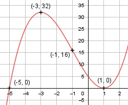

Aufgabe 39 f(x) = x3 + 3x2 - 9x + 5 f'(x) = 3x2 + 6x - 9, f''(x) = 6x + 6, f'''(x) = 6 Definitionsbereich: -∞ < x < ∞ Wertebereich: -∞ < f(x) < ∞ Asymptoten: - Symmetrie: - Nullstellen: x3 + 3x2 - 9x + 5 = 0 Durch Probieren gefunden x = 1. Hornerschema: 1 3 -9 5 x1 = 1 1 4 -5 ------------------------- 1 4 -5 0 Polynomdivision: x3 + 3x2 - 9x + 5 : (x - 1) = x2 + 4x - 5 -(x3 - x2) ------------ 4x2 - 9x + 5 -(4x2 - 4x) ------------ -5x + 5 -(-5x + 5) ----------- 0 x2 + 4x - 5 = 0 p, q - Formel: p = 4, q = -5 x2,3 = x2,3 = -2 ± x2,3 = -2 ± x2,3 = -2 ± 3 x2 = 1 (Berührpunkt, Extrempunkt) x3 = - 5 N1,2(1|0), N3(-5|0) Schnittpunkt mit der y-Achse: f(0) = 03 + 3 * 02 - 9 * 0 + 5 = 5 Sy(0|5) Extrempunkte: 3x2 + 6x - 9 = 0 | :3 x2 + 2x - 3 = 0 p, q - Formel: p = 2, q = -3 x1,2 = x1,2 = -1 ± x1,2 = -1 ± x1,2 = -1 ± 2 x1 = 1, f(1) = 0 x2 = -3, f(-3) = (-3)3 + 3 * (-3)2 - -9 * (-3) + 5 = 32 f''(1) = 6 * 1 + 6 > 0 --> Tiefpunkt (1|0) f''(-3) = 6 * (-3) + 6 < 0 --> Hochpunkt (-3|32) Wendepunkte: 6x + 6 = 0 |-6 6x = -6|:6 x = -1, f(-1) = (-1)3 + 3 * (-1)2 - 9 * (-1) + 5 = 16, f'''(-1) ≠ 0 --> Wendepunkt (-1|16) Graph:
